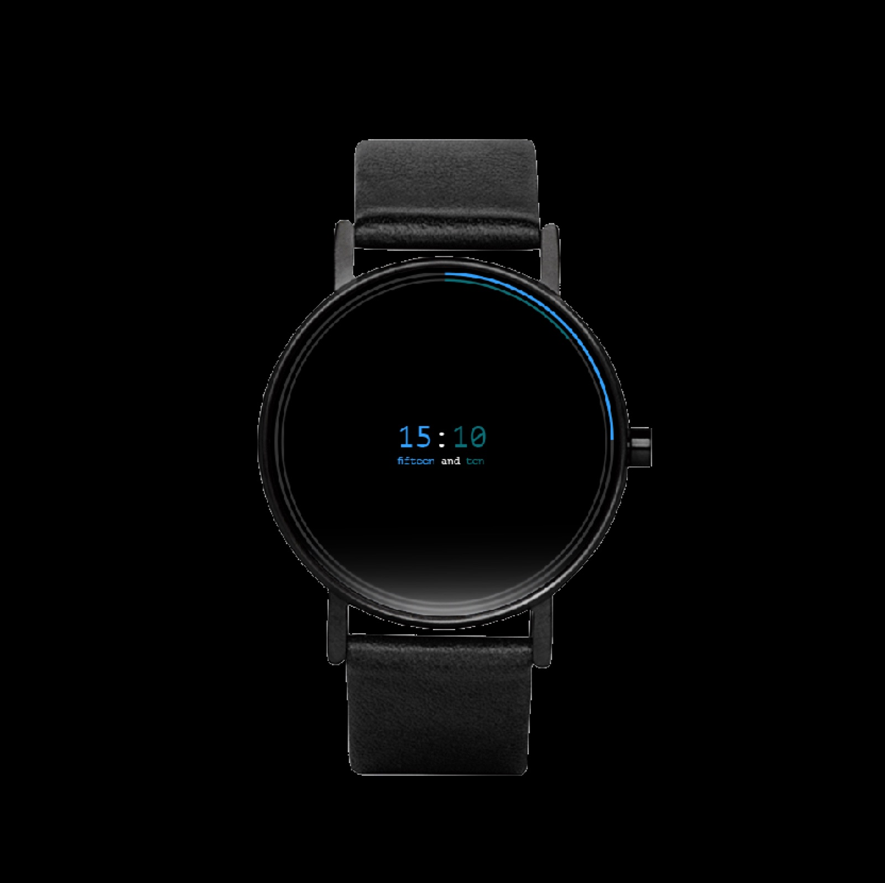

Work / Wearables / Language learning
Babylon
You check your watch dozens of times a day. Babylon turns every glance into a micro-lesson: a smartwatch that teaches you numbers in a new language, one telling-of-the-time at a time.


Numbers are where new languages stall
People starting a new language often want to begin with numbers, prices, times, dates are the first real-world test. But number drills are exactly the kind of practice that apps make tedious and people abandon.
The opportunity: numbers already surround us on a device we glance at constantly. What if the watch simply told the time in the language you’re learning?
Three psychological needs, one watch face
Based on research and data analysis, three psychological needs surfaced consistently:
- Autonomy: learners want progress without surrendering their day to an app.
- Stimulation: practice has to arrive in fresh, unforced moments.
- Competence: each glance should deliver a small, real win.
The combination of those needs let the team genuinely empathize with users, and it pointed directly at the watch’s unique functionality: passive exposure that compounds, with the time itself as the flash card.
The best learning interface is the one you were already going to look at.design principle, Babylon
From session room to screen
I facilitated the design thinking sessions that produced the needs framing, then translated the research results into the interactive design, the watch-face behavior, the pairing of numerals with their written forms, and the restraint that keeps Babylon a watch first and a teacher second.